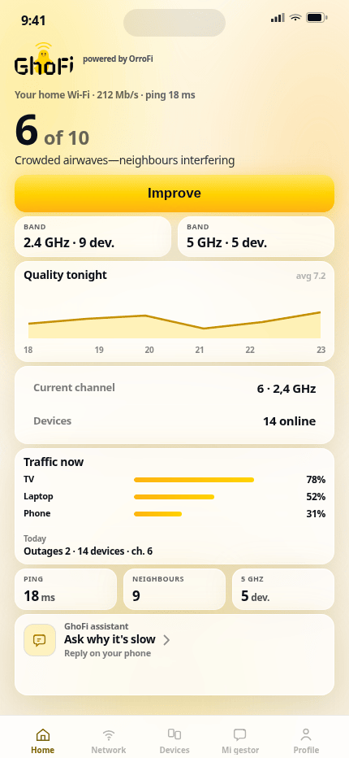
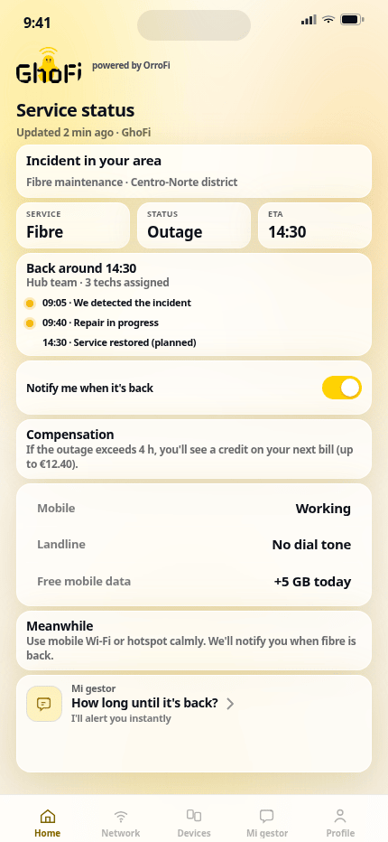
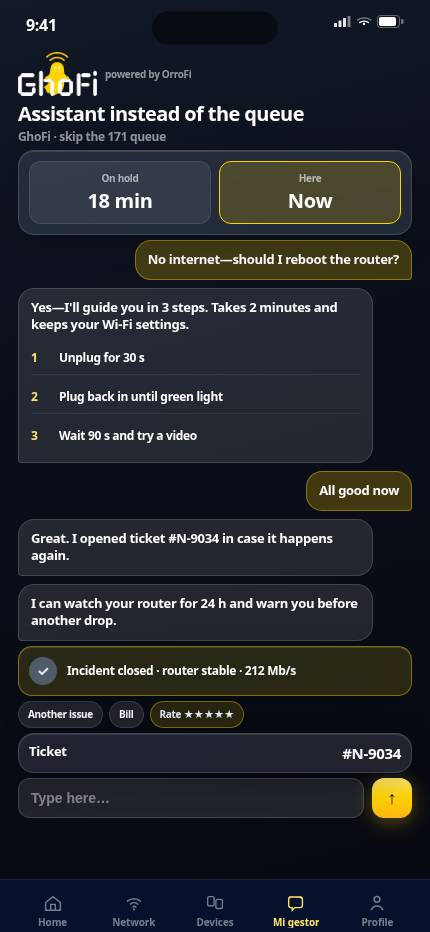
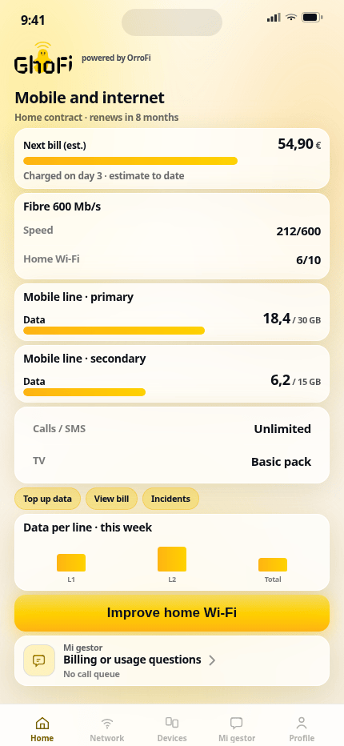
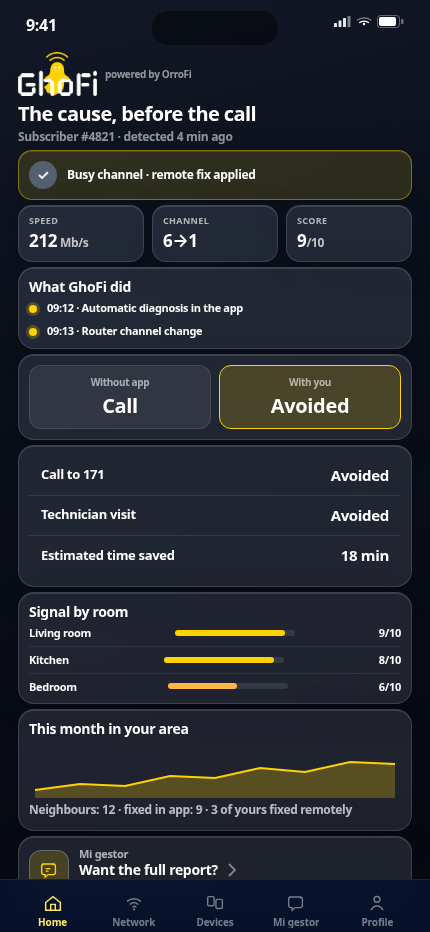
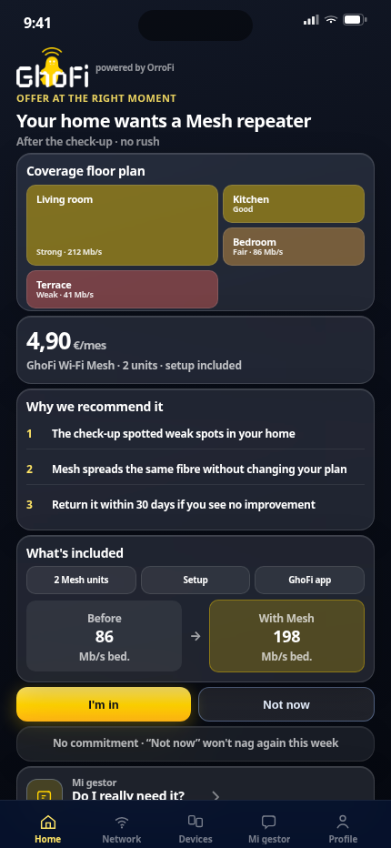
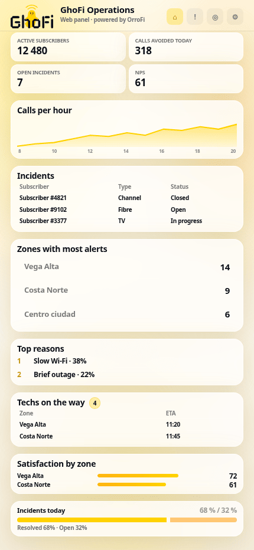
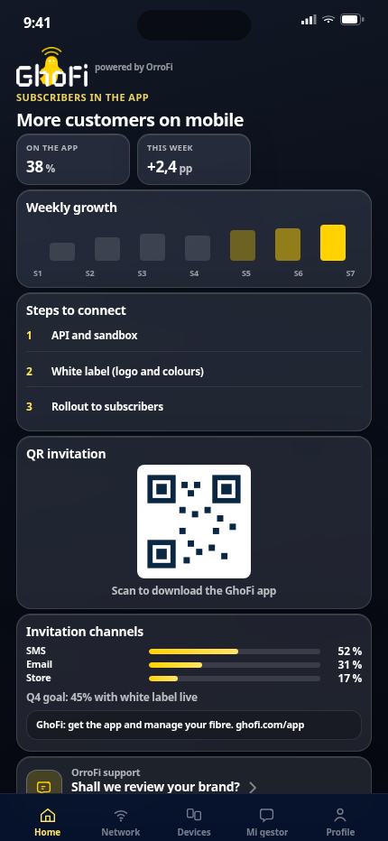

Your subscribers are happy. Your support costs less.
The app is released under your brand: your logo, your colours, your name on the App Store and Google Play. The subscriber sees only you. OrroFi stays out of the picture.
OrroFi is a ready-made app under your brand. It makes your customers' home internet better, and talking to you simple, quick and human.


A direct channel to the customer
Today, between the operator and the subscriber, there is a queue on the phone, letters no one reads, and SMS that get lost among the advertising. OrroFi takes that wall away. Your brand lives on the customer's phone, and any important message arrives at once: an outage and how long it will take to fix, planned works, a technician's visit, a new bill.

An assistant instead of the queue
Mi gestor knows the customer's contract, their services and the state of their home network. So it answers to the point, day and night, in seconds, and not with stock phrases. When a question needs a person, the assistant passes the conversation to your employee with the whole history, and the customer does not have to say it all again.

Mobile service and home internet in one window
Your subscriber sees the home Wi‑Fi, the family's mobile lines, the packs and the bills in one app under your brand. When a person has everything in one place, they call support less often and leave for a competitor less often.
The assistant understands where the problem actually is, at home or on the mobile network, and settles it before the call to support. If a subscriber is running out of gigabytes, it offers a pack at the moment it is needed, without pushy advertising. And for a small operator that has no app of its own, OrroFi provides a full mobile app from the first day, on a par with the large ones.

Fewer calls, fewer visits, and fewer customers who leave
Most complaints about “bad internet” are really crowded air in the customer's home. OrroFi finds the cause and removes it before the subscriber picks up the phone. Fewer calls to the call centre, fewer wasted technician visits. And, most of all, fewer customers who leave for a competitor simply because “everything slows down in the evening”.

Sales that fit
The app sees when the customer really needs more: a data pack, a faster plan, a repeater in the far room. The offer arrives at the right moment and is taken as help, not as advertising. And the “Invite a friend” programme turns happy subscribers into your best sellers.

A ready-made app under your brand
You do not need your own development team or years of work. OrroFi arrives with your name and your colours, with an app for iPhone and Android, a web account and a panel for staff.

How to start
- Tell us about your network and your subscribers.
- We connect OrroFi to your systems and dress the app in your brand.
- Your subscribers install the app, and you see the result.
